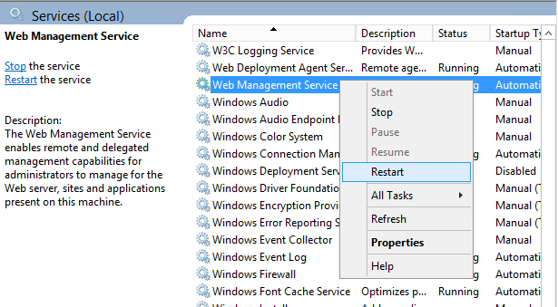

<!DOCTYPE html>
<html>
<head><meta name="generator" content="Hexo 3.8.0">
  <meta charset="utf-8">
  <title>WebDeployment 的一些前置設定 | The name is Alex</title>
  <meta name="viewport" content="width=device-width,initial-scale=1,maximum-scale=1,minimum-scale=1">
  <meta name="description" content="WebDeploy 雖然有一點 Old School，但不可否認的在一個內部網域相對安全的環境內要把程式遠端佈署到同網域內另一台有IIS的電腦，WebDeploy仍然是很棒的選擇。 設定 Web Deploy 的方式已經介紹了很多，這邊是要記錄在執行遠端的Script (Powershell) 設定上會遇到的一些相關問題。 我遇到的問題是在 preSync &amp;amp; postSync 的參數上指">
<meta name="keywords" content="IIS,WebDeploy">
<meta property="og:type" content="article">
<meta property="og:title" content="WebDeployment 的一些前置設定">
<meta property="og:url" content="http://alexpacer.github.io/posts/d974dd78/index.html">
<meta property="og:site_name" content="The name is Alex">
<meta property="og:description" content="WebDeploy 雖然有一點 Old School，但不可否認的在一個內部網域相對安全的環境內要把程式遠端佈署到同網域內另一台有IIS的電腦，WebDeploy仍然是很棒的選擇。 設定 Web Deploy 的方式已經介紹了很多，這邊是要記錄在執行遠端的Script (Powershell) 設定上會遇到的一些相關問題。 我遇到的問題是在 preSync &amp;amp; postSync 的參數上指">
<meta property="og:locale" content="tw">
<meta property="og:image" content="http://alexpacer.github.io/posts/d974dd78/wmsvc-service.png">
<meta property="og:updated_time" content="2019-10-08T02:23:37.012Z">
<meta name="twitter:card" content="summary">
<meta name="twitter:title" content="WebDeployment 的一些前置設定">
<meta name="twitter:description" content="WebDeploy 雖然有一點 Old School，但不可否認的在一個內部網域相對安全的環境內要把程式遠端佈署到同網域內另一台有IIS的電腦，WebDeploy仍然是很棒的選擇。 設定 Web Deploy 的方式已經介紹了很多，這邊是要記錄在執行遠端的Script (Powershell) 設定上會遇到的一些相關問題。 我遇到的問題是在 preSync &amp;amp; postSync 的參數上指">
<meta name="twitter:image" content="http://alexpacer.github.io/posts/d974dd78/wmsvc-service.png">
  <link rel="icon" href="/favicon.ico">
  

  <link rel="stylesheet" href="https://cdnjs.cloudflare.com/ajax/libs/bulma/0.6.1/css/bulma.min.css">
  <link rel="stylesheet" href="https://maxcdn.bootstrapcdn.com/font-awesome/4.7.0/css/font-awesome.min.css">
  <link rel="stylesheet" href="/css/style.css">
  
    <link rel="stylesheet" href="/css/prism.css">
  
  
<script type="application/ld+json">
  {
  "@context": "http://schema.org",
  "@type": "BlogPosting",
  "headline": "WebDeployment 的一些前置設定",
  "name": "WebDeployment 的一些前置設定",
  "datePublished": "2019-06-20T17:25:22.000Z",
  "dateModified": "2019-10-08T02:23:37.012Z",
  "mainEntityOfPage": {
    "@type": "WebPage",
    "@id": "http://alexpacer.github.io/posts/d974dd78/index.html"
  },
  "author": {
    "@type": "Person",
    "name": "Alex Wei",
    "image": "/images/avatar.jpg"
  },
  "publisher": {
    "@type": "Organization",
    "name": "Alex Wei",
    "logo": {
      "@type": "ImageObject",
      "url": "/images/avatar.jpg"
    }
  }
}
</script>

  
  
    <script src="/js/prism.js"></script>
  
  <!-- <link href="/css/prism.css" rel="stylesheet" /> -->
  <link href="/css/prism-line-numbers.css" rel="stylesheet">
<link rel="stylesheet" href="/css/prism-twilight.css" type="text/css"></head>
</html>
<body>
  

  <header class="navbar" role="navigation" aria-label="main navigation">
  <div class="navbar-brand">
    <a href="/" class="navbar-item">
      The name is Alex
    </a>
  </div>
</header>

  <div class="container">
    <div class="columns">
      <div class="main column is-8">
        <article class="post">
  <figure class="post-thumbnail">
    

  </figure>
  <span>2019-06-21
</span>
  <h1 class="title">WebDeployment 的一些前置設定</h1>
  
  <div class="tags">
    
      <a class="tag" href="/tags/IIS/">IIS</a>
    
      <a class="tag" href="/tags/WebDeploy/">WebDeploy</a>
    
  </div>


  <div class="content">
    <p>WebDeploy 雖然有一點 Old School，但不可否認的在一個內部網域相對安全的環境內要把程式遠端佈署到同網域內另一台有IIS的電腦，WebDeploy仍然是很棒的選擇。</p>
<p>設定 Web Deploy 的方式已經介紹了很多，這邊是要記錄在執行遠端的Script (Powershell) 設定上會遇到的一些相關問題。</p>
<p>我遇到的問題是在 preSync &amp; postSync 的參數上指定要執行一小段 PowerShellScript，如下，會出現沒有該有的權限問題</p>
<pre class=" language-bash"><code class="language-bash"><span class="token punctuation">..</span>.<span class="token operator">></span> <span class="token string">"msdeploy.exe"</span> -allowUntrusted -source:dirPath<span class="token operator">=</span><span class="token string">'....'</span> -dest:computerName<span class="token operator">=</span><span class="token string">'https://...:8172/msdeploy.axd'</span>,dirPath<span class="token operator">=</span><span class="token string">'...'</span>,userName<span class="token operator">=</span><span class="token string">'deploy-user'</span>,password<span class="token operator">=</span><span class="token string">'deploy-pwd'</span>,AuthType<span class="token operator">=</span><span class="token string">'Basic'</span>,includeAcls<span class="token operator">=</span><span class="token string">'False'</span> -verb:sync -preSync:runCommand<span class="token operator">=</span><span class="token string">'powershell -noprofile -Command "....."'</span>,waitInterval<span class="token operator">=</span>30000 

Error: <span class="token punctuation">(</span>6/20/2019 11:12:21 AM<span class="token punctuation">)</span> An error occurred when the request was processed on the remote computer.
Error: A required privilege is not held by the client. <span class="token punctuation">(</span>Exception from HRESULT: 0x80070522<span class="token punctuation">)</span>
</code></pre>
<p>我的 WebDeploy 參數所指定的使用者已經在目標電腦的 Administrator 群組裡了。</p>
<p>爬文後才發現, 該錯誤訊息指的是執行 WebDeploy 的服務沒有足夠的權限。<br>透過以下的指令可以提升 wmsvc 這個服務的執行權限</p>
<pre class=" language-bash"><code class="language-bash">sc privs wmsvc SeChangeNotifyPrivilege/SeImpersonatePrivilege/SeAssignPrimaryTokenPrivilege/SeIncreaseQuotaPrivilege
</code></pre>
<p>在提升權限後，wmsvc 也記得要重啟才行</p>
<p></p>
<h2 id="Reference"><a href="#Reference" class="headerlink" title="Reference"></a>Reference</h2><p><a href="https://stackoverflow.com/questions/4380819/msdeploy-runcommand-priviliges" target="_blank" rel="noopener">https://stackoverflow.com/questions/4380819/msdeploy-runcommand-priviliges</a></p>

  </div>
  
<nav class="footer-nav">
  
    <div class="footer-nav__prev">
      <div class="footer-nav__label">
        較新的那篇
      </div>
      <a href="/posts/af2d802f/">
        Actor Model - 聊聊對 Actor Model 的理解
      </a>
    </div>
  
  
    <div class="footer-nav__next">
      <div class="footer-nav__label">
        較舊的那篇
      </div>
      <a href="/posts/904aaacf/">
        ASP.net Core (2.2) 整理 1 :: [Auth &amp; Authorize]
      </a>
    </div>
  
</nav>


</article>


<div id="disqus_thread"></div>


      </div>
      <div class="sidebar column is-4">
        <aside>
  
    <aside class="search widget">
  <form action="//google.com/search" method="get" accept-charset="UTF-8" class="search-form" target="_blank">
    <div class="control has-icons-right">
      <input type="search" name="q" class="input" placeholder="搜尋">
      <span class="icon is-small is-right">
        <i class="fa fa-search"></i>
      </span>
    </div>
    <input type="hidden" name="sitesearch" value="http://alexpacer.github.io">
  </form>
</aside>

  
    <div class="widget-wrap">
  <div class="widget-title">作者</div>
  <aside class="profile media widget">
    <figure class="profile-avatar media-left">
      
    </figure>
    <div class="media-content">
      <p>
        <strong>
          <span>Alex Wei</span>
          <span class="icon">
            <a href="https://github.com/alexpacer" target="_blank">
              <i class="fa fa-github"></i>
            </a>
          </span>
        </strong>
        <br>
        <span></span>
      </p>
    </div>
  </aside>
</div>

  
    
  <div class="widget-wrap">
    <div class="widget-title">最近更新</div>
    <div class="widget">
      <ul class="recent-post">
        
          <li class="recent-post-item media">
            <figure class="media-left">
              

            </figure>
            <div class="media-content">
              <p class="">
                <a href="/posts/af2d802f/" class="">
                  Actor Model - 聊聊對 Actor Model 的理解
                </a>
              </p>
              <p class="">
                <small>
                  2019-10-17

                </small>
              </p>
            </div>
          </li>
        
          <li class="recent-post-item media">
            <figure class="media-left">
              

            </figure>
            <div class="media-content">
              <p class="">
                <a href="/posts/d974dd78/" class="">
                  WebDeployment 的一些前置設定
                </a>
              </p>
              <p class="">
                <small>
                  2019-06-21

                </small>
              </p>
            </div>
          </li>
        
          <li class="recent-post-item media">
            <figure class="media-left">
              

            </figure>
            <div class="media-content">
              <p class="">
                <a href="/posts/904aaacf/" class="">
                  ASP.net Core (2.2) 整理 1 :: [Auth &amp; Authorize]
                </a>
              </p>
              <p class="">
                <small>
                  2019-02-14

                </small>
              </p>
            </div>
          </li>
        
          <li class="recent-post-item media">
            <figure class="media-left">
              

            </figure>
            <div class="media-content">
              <p class="">
                <a href="/posts/17bf5966/" class="">
                  Windows Server 安裝 RabbitMQ
                </a>
              </p>
              <p class="">
                <small>
                  2018-12-12

                </small>
              </p>
            </div>
          </li>
        
          <li class="recent-post-item media">
            <figure class="media-left">
              

            </figure>
            <div class="media-content">
              <p class="">
                <a href="/posts/ebf2f33a/" class="">
                  Redis cluster on CentOs
                </a>
              </p>
              <p class="">
                <small>
                  2018-04-27

                </small>
              </p>
            </div>
          </li>
        
      </ul>
    </div>
  </div>


  
    
  <div class="widget-wrap">
    <h3 class="widget-title">標籤雲</h3>
    <div class="widget">
      <a href="/tags/net/" style="font-size: 10px;">.net</a> <a href="/tags/IIS/" style="font-size: 10px;">IIS</a> <a href="/tags/WebDeploy/" style="font-size: 10px;">WebDeploy</a> <a href="/tags/actor-model/" style="font-size: 10px;">actor-model</a> <a href="/tags/asp-net-core/" style="font-size: 10px;">asp.net-core</a> <a href="/tags/elk/" style="font-size: 10px;">elk</a> <a href="/tags/nginx/" style="font-size: 10px;">nginx</a> <a href="/tags/rabbit-mq/" style="font-size: 10px;">rabbit-mq</a> <a href="/tags/rails/" style="font-size: 20px;">rails</a> <a href="/tags/redis/" style="font-size: 10px;">redis</a> <a href="/tags/ruby/" style="font-size: 10px;">ruby</a> <a href="/tags/unit-testing/" style="font-size: 10px;">unit-testing</a> <a href="/tags/windows/" style="font-size: 10px;">windows</a>
    </div>
  </div>


  
    
  <div class="widget-wrap">
    <h3 class="widget-title">封存</h3>
    <div class="widget">
      <ul class="archive-list"><li class="archive-list-item"><a class="archive-list-link" href="/archives/2019/10/">October 2019</a><span class="archive-list-count">1</span></li><li class="archive-list-item"><a class="archive-list-link" href="/archives/2019/06/">June 2019</a><span class="archive-list-count">1</span></li><li class="archive-list-item"><a class="archive-list-link" href="/archives/2019/02/">February 2019</a><span class="archive-list-count">1</span></li><li class="archive-list-item"><a class="archive-list-link" href="/archives/2018/12/">December 2018</a><span class="archive-list-count">1</span></li><li class="archive-list-item"><a class="archive-list-link" href="/archives/2018/04/">April 2018</a><span class="archive-list-count">1</span></li><li class="archive-list-item"><a class="archive-list-link" href="/archives/2017/12/">December 2017</a><span class="archive-list-count">2</span></li><li class="archive-list-item"><a class="archive-list-link" href="/archives/2017/06/">June 2017</a><span class="archive-list-count">4</span></li></ul>
    </div>
  </div>


  
    <div class="widget-wrap">
    <h3 class="widget-title">連結</h3>
    <div class="widget">
        <ul style="list-style: circle">
            <li>
                <a href="https://blog.ryantseng.me/" class="">
                    Ryan - 不務正業 全端 開發記事
                </a>
            </li>

            <li>
                <a href="https://eugenesu0515.github.io/Blog/" class="">
                    Eugene
                </a>
            </li>
        </ul>
    </div>
</div>

  
</aside>

      </div>
    </div>
  </div>
  <footer class="footer">
  <div class="container">
    <div class="content has-text-centered">
      <p>
        <a rel="license" href="http://creativecommons.org/licenses/by-nc/4.0/"></a><br>This blog is licensed under a <a rel="license" href="http://creativecommons.org/licenses/by-nc/4.0/">Creative Commons Attribution-NonCommercial 4.0 International License</a>.


        <!--
          <br />
          <span xmlns:cc="http://creativecommons.org/ns#" property="cc:attributionName">Alex Wei</span>'s Workを著作者とするこの作品は<a rel="license" href="http://creativecommons.org/licenses/by-sa/4.0/">クリエイティブ・コモンズの 表示 - 継承 4.0 国際 ライセンス</a>で提供されています。 -->
      </p>
    </div>
  </div>
</footer>


  <script>
    var disqus_shortname = 'the-name-is-alex';
    
    var disqus_url = 'http://alexpacer.github.io/posts/d974dd78/';
    
    (function(){
      var dsq = document.createElement('script');
      dsq.type = 'text/javascript';
      dsq.async = true;
      dsq.src = '//go.disqus.com/embed.js';
      (document.getElementsByTagName('head')[0] || document.getElementsByTagName('body')[0]).appendChild(dsq);
    })();
  </script>


  
</body>
</html>
